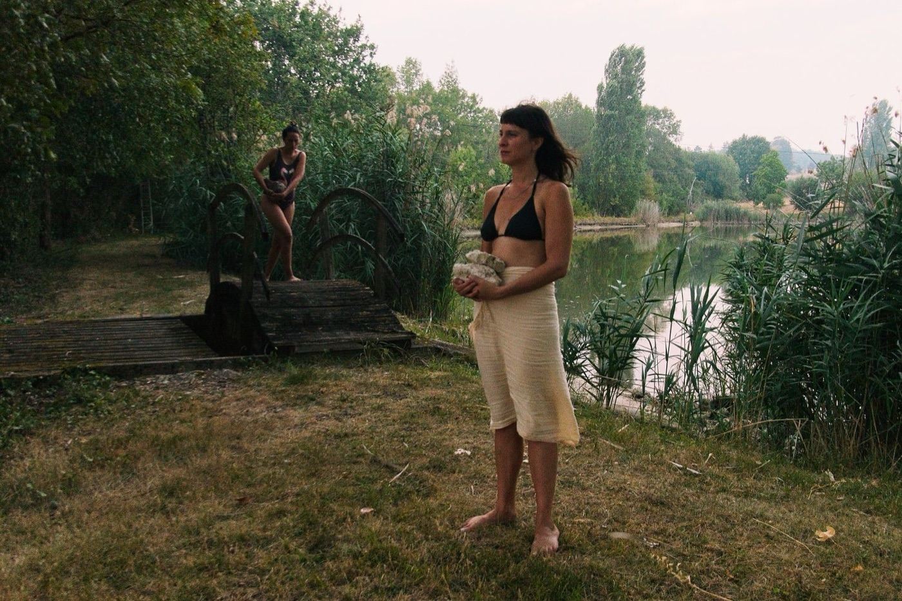
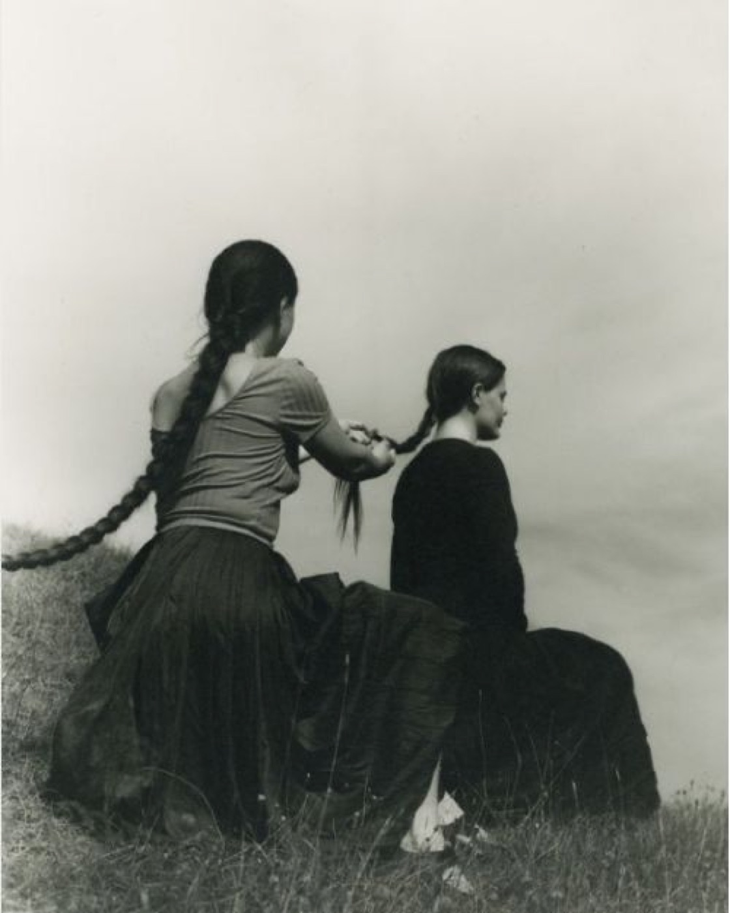
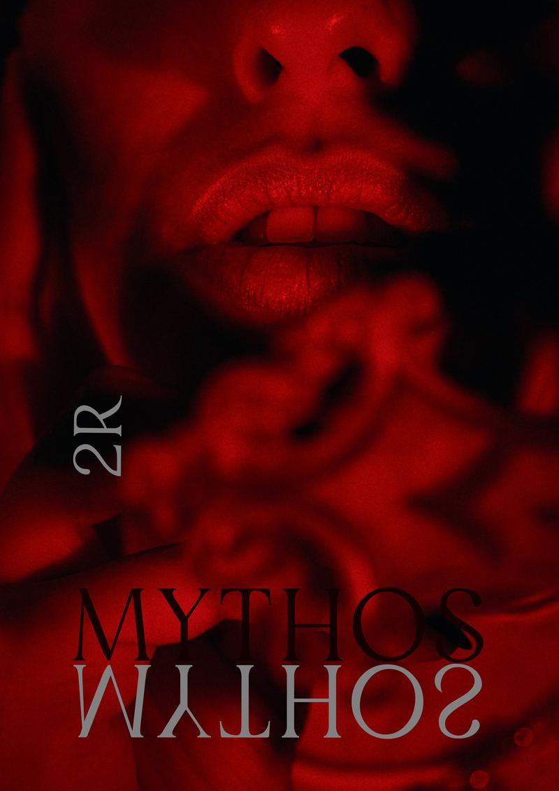
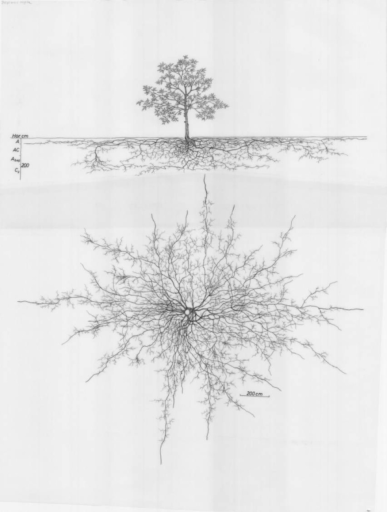

Website

Example · Gathering registerHome
Photograph hero, statement, pathways, selected work on night, the magazine, calendar, interlude, engage.
Example · Conversation registerManifesto
Page title with spiral, long reading with drop cap, pull quote, verse and the twenty-one-part litany.
 Example · Gathering register
Example · Gathering registerGatherings
Overlapping prints, events with photos, an interlude, the table of local hubs.

Example · Gathering registerJoin
Banner hero on night, three steps in, member voices, a band to come to a call.

Example · Conversation registerMagazine
Cover and contents, a poem, a spread of plates.

Example · Study registerWhite paper
Title and byline, sticky numbered contents, abstract, figures and footnotes.